IndustrialDutos em galpãoOrtobom · Simões Filho (BA)
Rede suspensa na estrutura metálica, integrada à iluminação e ao sistema de combate a incêndio.
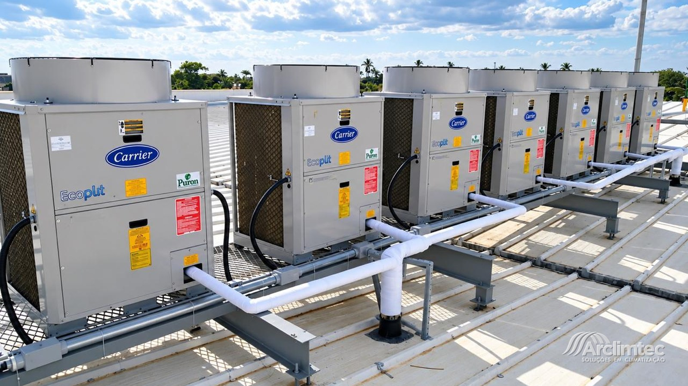
Condensadoras em laje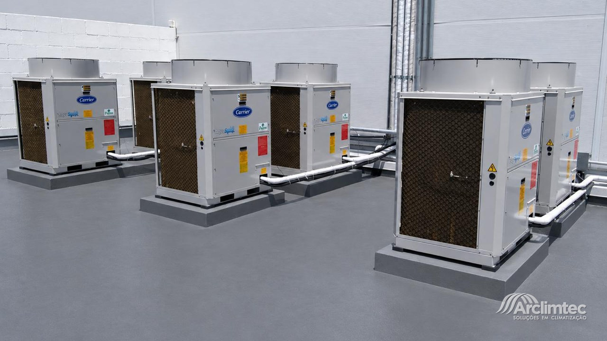
Condensadoras em laje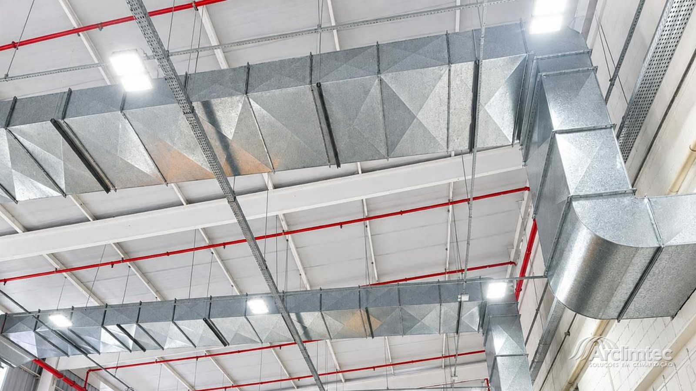
Rede dutada industrial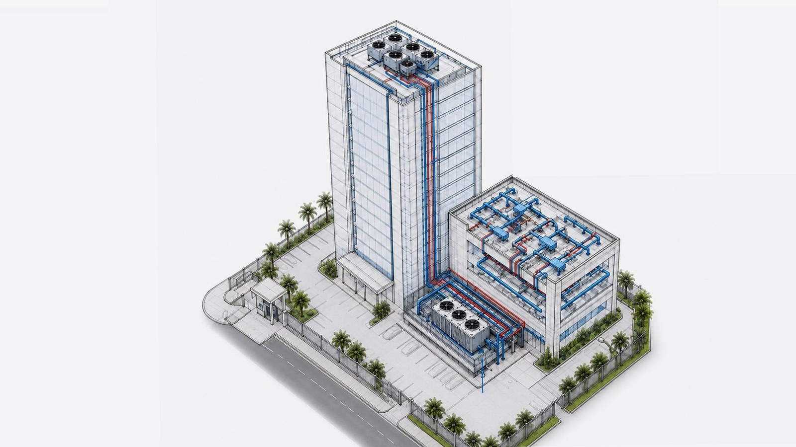
Projeto técnicoDo projeto ao contrato de manutenção — tudo executado por equipe própria.
Dimensionamento pela carga térmica real do ambiente.
VRF, self-contained, rede dutada, split e cassete.
Preventiva periódica e corretiva emergencial.
Plano de manutenção, operação e controle documentado.
Medição e laudo com validade legal para o seu ambiente.
Pressão, temperatura, vazão e consumo medidos.
Renovação de ar, ventilação, exaustão e pressurização.
Fabricação e montagem em painel MPU e chapa galvanizada.
Preventiva, corretiva e PMOC — com instrumento, não no olho.
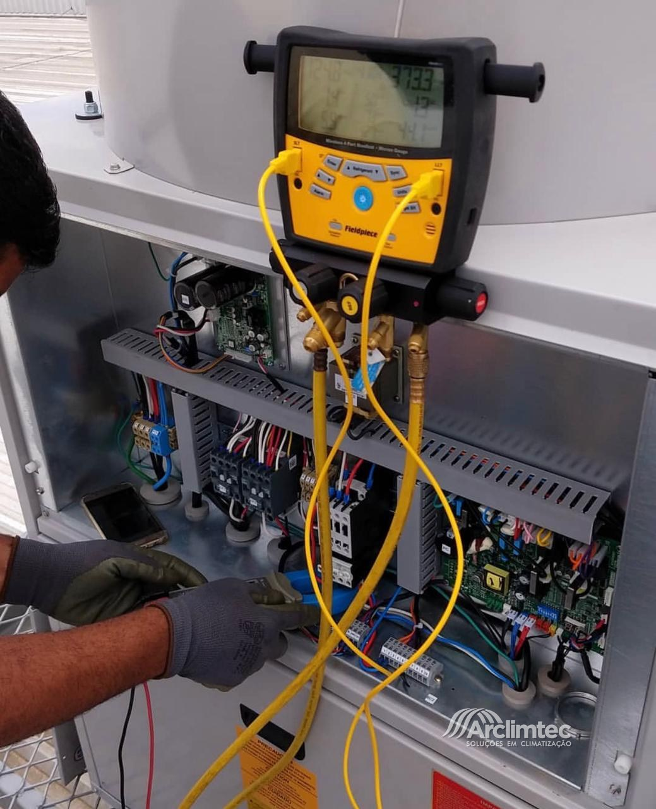
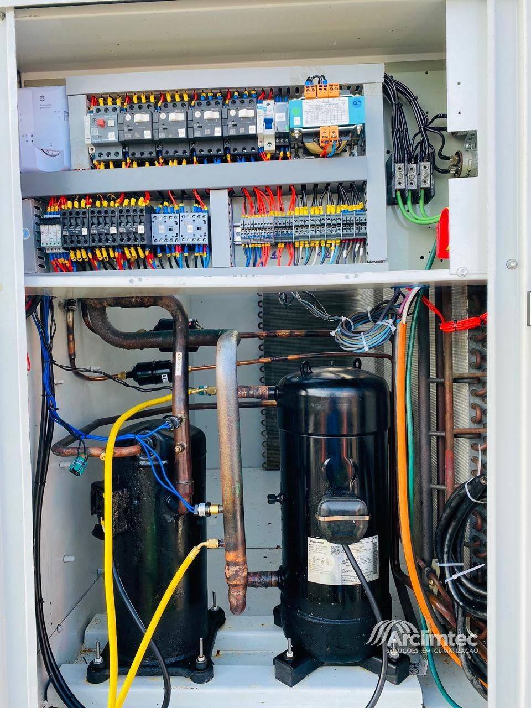
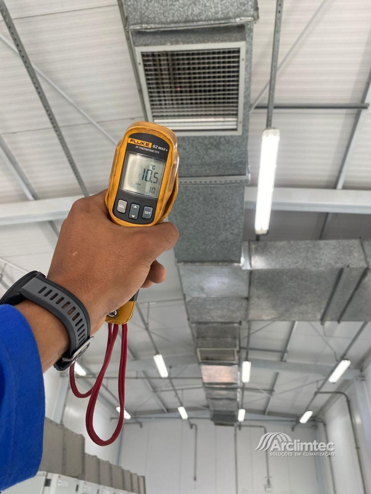
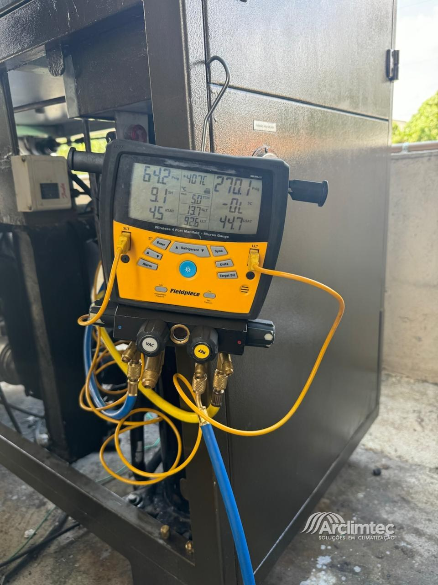
Energia, indústria, saúde e redes de varejo — no Brasil todo.


Do duto galvanizado no galpão ao cassete embutido no forro do apartamento.
Rede suspensa na estrutura metálica, integrada à iluminação e ao sistema de combate a incêndio.

Seis unidades em laje técnica, cada uma em base própria, com interligação e drenagem dedicadas.

Unidade externa instalada em passarela com grade de piso e guarda-corpo.

Conjunto com plenum de insuflamento e condensadoras dedicadas.

Montagem alinhada, com filtro e dutos flexíveis prontos para interligação da rede.

Preventiva em parque sobre laje impermeabilizada com argila expandida.

Instalação embutida no forro, acabamento alinhado ao projeto de interiores.
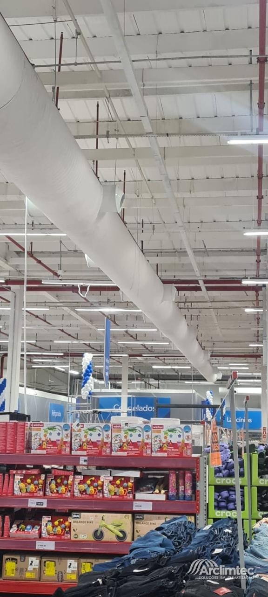
Duto redondo pré-isolado suspenso na estrutura metálica, com as saídas de ar ao longo do trecho.
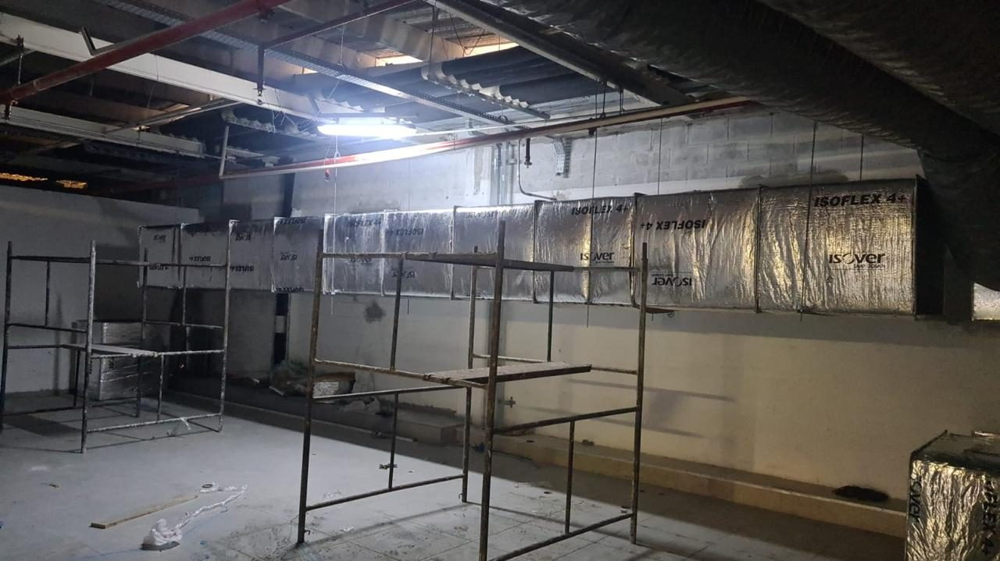
Duto convencional isolado com manta de lã de vidro de face aluminizada, montado ainda na fase de obra.
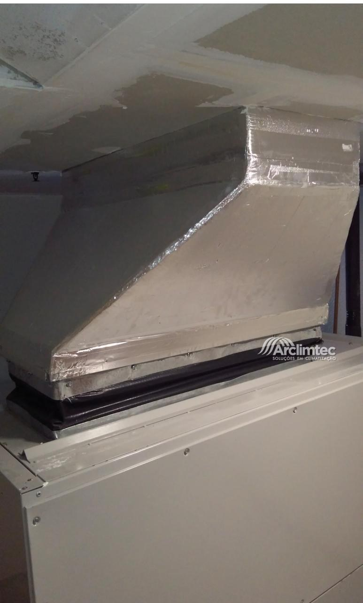
Plenum isolado com manta térmica e acabamento em fita aluminizada, ligado à casa de máquinas.
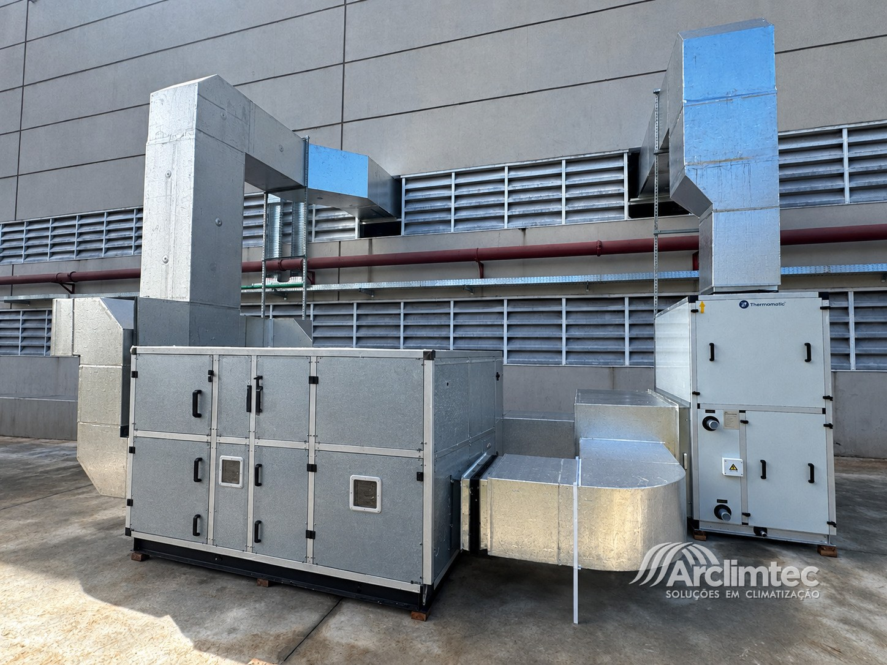
Conjunto de climatizadores com rede dutada externa interligando as unidades à fachada industrial.
A Arclimtec tem 15 anos de experiência no mercado, em Campina Grande, tratando climatização como engenharia: dimensionar antes de instalar, medir antes de entregar e documentar depois de manter.
São mais de 50 projetos de médio e grande porte entregues — indústrias, redes comerciais, saúde e residências em todo o Brasil. Com equipe própria, treinada e uniformizada: é o mesmo time que projeta, instala e volta para a manutenção.
Proporcionar conforto em climatização e soluções técnicas específicas, através de processos ágeis, seguros, éticos e eficazes, garantindo a satisfação plena de nossos clientes.
Ser a maior referência em qualidade e confiabilidade em soluções de Sistemas de Ar Condicionado do Norte/Nordeste, atendendo às necessidades e superando as expectativas de clientes, colaboradores e fornecedores.